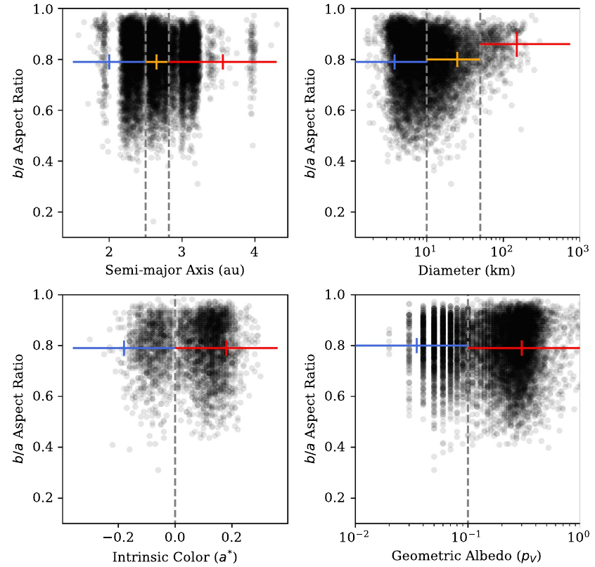

The ESA mission Gaia not only observes a good fraction of the stars in the milky way, but also a huge number of asteroids. Gaia Data Release 2 (DR2) is the first data release to include a number of asteroid observations, limited to G magnitudes (no color information) and a pre-selected sample of 14099 asteroids from different populations. For each asteroids, DR2 contains a median number of 9 observations over the first 9 months of the mission. While this limited data set does not allow for deriving the targets’ rotational periods or constraining their taxonomic types, it is useful for a look into the shape distribution of asteroids.
In this study we extracted lower limit lightcurve amplitudes for all main belt asteroids in the DR2 sample in order to investigate the population shape distribution and to compare it with other populations.
In order to derive lower-limit lightcurve amplitudes, we subtracted expected brightness variations as a result of the changing solar phase angle based on literature data. Amplitudes (peak-to-peak) were then derived from the resulting scatter of the reported magnitudes. These amplitudes only represent lower limit amplitudes due to the incomplete coverage of the lightcurves. For each main belt object, we translate this lightcurve amplitude into an aspect ratio assuming a triaxial ellipsoidal shape model. The following panel (Figure 2 in the paper) shows the distribution of these aspect ratios as a function of other target properties:
{kind=link}

While a significant amount of variation in the distributions over different subsamples (separated by dashed vertical lines) is evident, debiased averages (colored symbols) differ only marginally with respect to their error bars. Debiasing has been achieved using a Monte Carlo simulation that accounts for deficiencies in the sampling process and in the accuracy of the photometric phase parameters taken from the literature.
The most significant effect in both the measured and debiased shape distributions is observed as a function of size: the DR2 data shows that large main belt asteroids tend to be rounder than smaller main belt asteroids, which is the result of larger and more massive bodies being more affected by self-gravity.
While the measured shape distributions show clear variations for different subsamples (e.g., as a function of semimajor axis), the small sample size strictly limits the confidence on any deductions. However, this study clearly shows that future Gaia small body data releases (which will hopefully include many more photometric data points for many more asteroids) will provide a treasure trove for studies as the one presented here.
Resources
- Mommert, M., McNeill, A., Trilling, D. E., Moskovitz, N., Delbo’, M. (2018), “The Main Belt Asteroid Shape Distribution from Gaia Data Release 2”, The Astronomical Journal, 156, 139., publication, arxiv